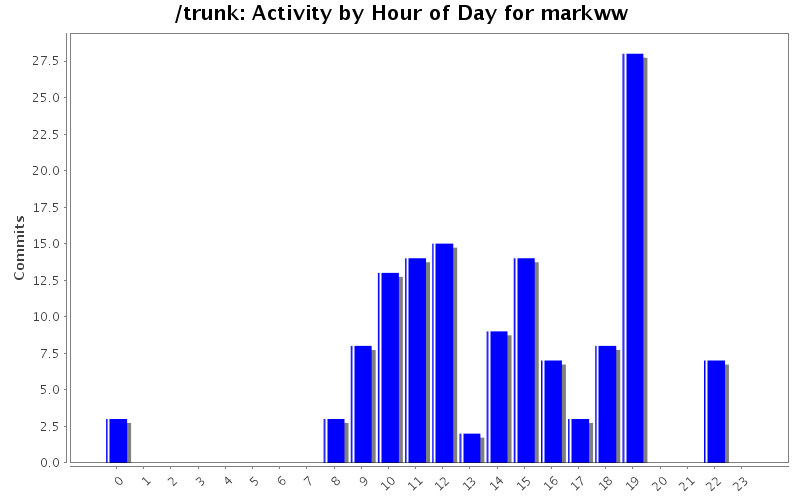
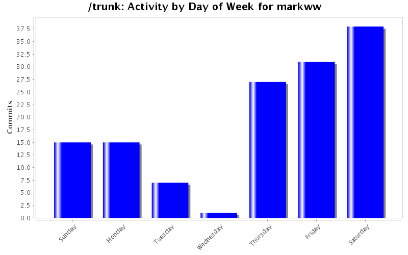
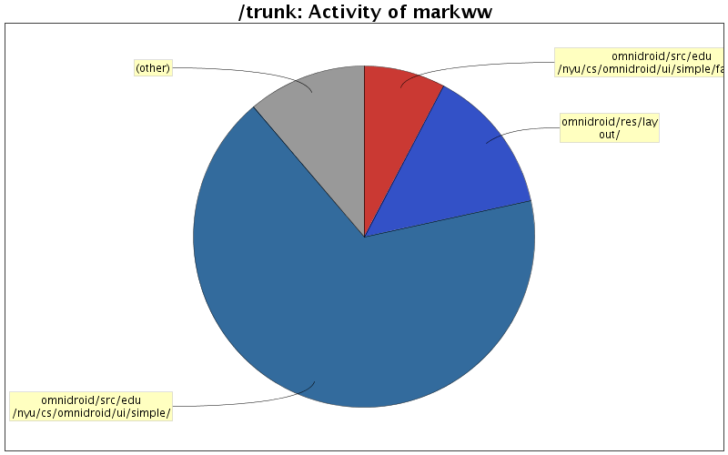

| Directory | Changes | Lines of Code | Lines per Change |
|---|---|---|---|
| Totals | 134 (100.0%) | 5827 (100.0%) | 43.4 |
| omnidroid/src/edu/nyu/cs/omnidroid/ui/simple/ | 61 (45.5%) | 3918 (67.2%) | 64.2 |
| omnidroid/res/layout/ | 15 (11.2%) | 809 (13.9%) | 53.9 |
| omnidroid/src/edu/nyu/cs/omnidroid/ui/simple/factoryui/ | 5 (3.7%) | 449 (7.7%) | 89.8 |
| omnidroid-test/src/edu/nyu/cs/omnidroid/ui/simple/model/ | 1 (0.7%) | 201 (3.4%) | 201.0 |
| omnidroid/src/edu/nyu/cs/omnidroid/model/ | 4 (3.0%) | 176 (3.0%) | 44.0 |
| omnidroid/src/edu/nyu/cs/omnidroid/ui/simple/model/ | 26 (19.4%) | 139 (2.4%) | 5.3 |
| omnidroid/ | 3 (2.2%) | 96 (1.6%) | 32.0 |
| omnidroid/src/edu/nyu/cs/omnidroid/ui/ | 5 (3.7%) | 21 (0.4%) | 4.2 |
| omnidroid/res/values/ | 2 (1.5%) | 18 (0.3%) | 9.0 |
| omnidroid/src/edu/nyu/cs/omnidroid/tests/ | 2 (1.5%) | 0 (0.0%) | 0.0 |
| omnidroid/res/drawable/ | 10 (7.5%) | 0 (0.0%) | 0.0 |

Fixed bug for action params, hitting cancel button would still insert any selected param, also made buttons on saved rules activity larger.
18 lines of code changed in 3 files:
Added support for pasting text over a selection in EditText control.
7 lines of code changed in 1 file:
Using new db constants, added support for using OmniArea filter.
100 lines of code changed in 3 files:
Removed unused UI and test classes after switching to new simple UI.
1 lines of code changed in 4 files:
Added util function for inserting text into an EditText control, which can be used to insert attributes for a user-created action.
27 lines of code changed in 2 files:
Added support for parameter variables in actions.
357 lines of code changed in 4 files:
Replaced if/else branches with lookup map.
26 lines of code changed in 1 file:
Added new UI generator for actions using their parameter data.
363 lines of code changed in 4 files:
changed model [int] values to [long].
90 lines of code changed in 11 files:
Added proper UI state save for activity derived dialogs.
96 lines of code changed in 10 files:
Added support for giving a rule a name and a description. When the user saves a rule, they are now prompted with a dialog asking for a name and description.
312 lines of code changed in 8 files:
Added support for reloading a rule directly after being saved so its memory representation matches the newly saved rule in the database.
9 lines of code changed in 1 file:
Connected UI 'delete rule' button to database delete rule method.
50 lines of code changed in 3 files:
Added new definitions in AndroidManifest.xml to point to new UI classes in the ui.simple package.
87 lines of code changed in 1 file:
Bug fix for ui/simple/model/Rule class. The correct number of filter branches/actions was not being returned in some cases. Added a new test (RuleTest.java) to check for different filter/action combinations and that they return the correct number of filters/actions.
219 lines of code changed in 3 files:
Added ModelParameter, made changes to UIDbHelper to support save and load of Rules.
139 lines of code changed in 3 files:
Added ActivitySavedRules which shows the user a list of all saved rules on their system. They can then view the full rule by being moved to ActivityChooseFiltersAndActions. Added a new member variable to the Rule class called 'isEnabled'. RuleBuilder now has two methods for initializing, from a root event (brand new rule), or from a saved rule (editing an existing rule).
354 lines of code changed in 8 files:
Fixed bug in Rule.getActions() where the returned ModelRuleAction array would be incorrect. Also added comments to UIDbHelper.java for where we probably need to add some additional code to make sure the Rule gets saved to the database correctly.
17 lines of code changed in 2 files:
Replaced toggle button between filter and action button sets, with a single button set which has the following options: [1]Add filter [2]Add action [3]Edit filter/action [4]Delete filter/action [5]Save rule.
59 lines of code changed in 2 files:
Adding UI dialogs for adding an action to a rule. Cleaned up comments etc in other files for consistency.
1069 lines of code changed in 13 files:
(7 more)